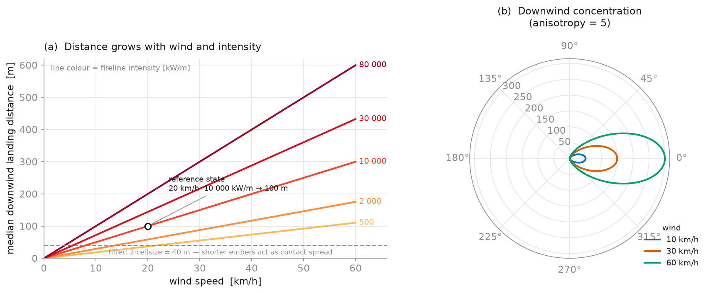
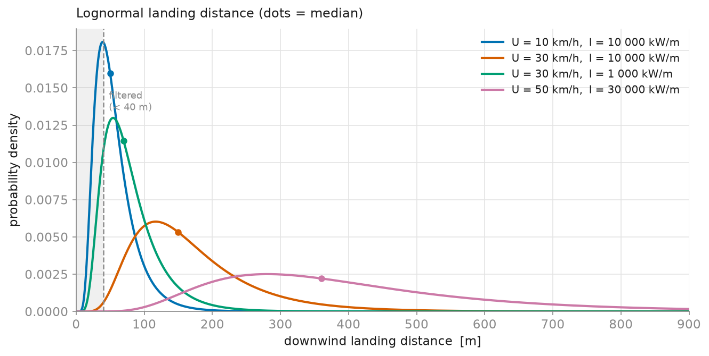

Fire Spotting
Fire spotting is the ignition of new fires ahead of the main front by wind-carried embers. PROPAGATOR launches embers from burning, spotting-prone cells, transports them downwind, and tracks where they are generated and where they land in every realization.
Enabling Spotting
Spotting is controlled by two switches:
- The simulation flag. Set
"do_spotting": truein the JSON configuration (CLI runs), or passdo_spotting=Truewhen constructing thePropagatorprogrammatically. When the flag is off, spotting is disabled for every fuel regardless of the fuel definitions. - The per-fuel flag. Each fuel type in the fuel system declares whether
it is prone to spotting. In YAML fuel definitions this is the optional
spotting: trueattribute; the legacy fuel system enables it for theconifersfuel only. Fuels can also tune the ignition probability of landing embers with theprob_ign_by_embersattribute. Only burning cells whose fuel hasspotting: truecan launch embers.
from propagator.core import FUEL_SYSTEM_LEGACY, Propagator
sim = Propagator(
dem=dem,
veg=veg,
fuels=FUEL_SYSTEM_LEGACY,
do_spotting=True,
realizations=100,
)
Model
When a spotting-prone cell burns, it emits a Poisson-distributed number of
embers (mean LAMBDA_SPOTTING = 2). Each ember is thrown at a
uniformly random azimuth θ, lands some distance away, and — if it clears the
landing-cell checks — ignites a new fire after a delay. The landing distance is
the heart of the model and is documented in full below.
Landing distance
Each ember's landing distance is drawn from a lognormal distribution whose median scales with wind speed and with the source cell's fireline intensity, and is concentrated downwind:
alignment = cos(w_dir − θ)
d_median = DISTANCE_REF · (U / WIND_REF) · (I / FLI_REF)^FLI_EXP
directional = exp( ANISOTROPY · (alignment − 1) )
distance = LogNormal( ln(d_median · directional), LOG_SIGMA )
landing_time = distance / ( U · max(alignment, MIN_ALIGNMENT) ) # seconds
with θ the ember's trajectory angle (uniform in [0, 2π)), U the source
cell's wind speed, and I the source cell's fireline intensity (kW/m, carried
on the propagation front from when the source cell ignited). If U ≤ 0 or
I ≤ 0 the ember travels no distance (no transport medium / no fire to loft
it). The model lives in fire_spotting / compute_spotting in
propagator.core.numba.propagation.
Reference values (the values below are injected from the code at docs-build time, so they always match the running constants):
| Constant | Value | Meaning |
|---|---|---|
SPOTTING_DISTANCE_REF |
100 m | median landing distance at the reference state |
SPOTTING_WIND_REF |
20 km/h | reference wind speed |
SPOTTING_FLI_REF |
10 000 kW/m | reference fireline intensity |
SPOTTING_FLI_EXPONENT |
0.333 | intensity → distance exponent (see below) |
SPOTTING_ANISOTROPY |
5 | downwind concentration (shape only) |
SPOTTING_DISTANCE_LOG_SIGMA |
0.5 | lognormal spread of the landing distance |
SPOTTING_MIN_ALIGNMENT |
0.2 | floor on the along-wind fraction for travel time |
At the reference state (U = 20 km/h,
I = 10 000 kW/m) the median landing distance is exactly
DISTANCE_REF = 100 m.
The figure below shows how the median landing distance grows with wind speed
(linearly) and with fireline intensity, and how it is concentrated downwind.
Embers whose distance falls below 2·cellsize are filtered out and behave like
ordinary contact spread, so at light winds no long-range spotting occurs.

Because the distance is sampled from a lognormal, each panel above is only the median; individual embers scatter around it, with a right-skewed tail that occasionally seeds distant spot fires:

Landing and ignition
Once the landing cell is chosen it must pass a few checks before a spot fire is scheduled:
- the cell must be in-grid, not already burning, and not a
NO_FUELcell; - ignition succeeds with probability
P_c = P_C0 · (1 + prob_ign_by_embers)(P_C0 = 0.6), i.e. a constant base probability corrected by the receiving cell's vegetation.
Ignition is not instantaneous. Once an ember successfully ignites a cell, the model adds a delay before the spot fire becomes capable of propagation, sampled from a lognormal distribution (median 600 s), and added to the ember travel time. The cell only starts spreading — and only counts as a received-ember ignition — once this combined time has elapsed.
Rationale for the non-obvious parametrizations
This formulation replaces an earlier Alexandridis-style distance formula
(distance = r_n · exp(U · k · (cos Δθ − 1)) with r_n ~ N(100 m, 25 m)). That
form had a wind-independent ~100 m base that the exponential could only
attenuate, and it scaled the anisotropy by wind speed — so at low wind the
directional term collapsed and embers landed ~100 m away isotropically,
producing strong omnidirectional spotting even at 0.1 km/h. The current model
puts the wind dependence in the distance magnitude instead.
1. Median linear in wind speed — (U / WIND_REF)
Embers are transported horizontally by the wind, so their travel distance must
grow with wind speed and vanish as the wind dies. Making the median
proportional to U gives exactly that: at U → 0, d_median → 0
continuously, and every ember falls inside 2·cellsize and is filtered out.
Spotting becomes a genuinely wind-driven phenomenon. With the legacy conifer
fuel (I ≈ 30 000 kW/m) the median landing distance is
≈ 360.6 m at 50 km/h but only ≈ 36.1 m at 5 km/h
(below the 2·cellsize = 40 m filter for 20 m
cells), and ≈ 0.7 m at 0.1 km/h — so all spotting disappears at
0.1 km/h while long-range spotting survives in strong wind.
2. Intensity exponent of 1/3 — (I / FLI_REF)^(1/3)
Stronger fires loft embers higher, and higher embers ride the wind for longer before landing. Two physically-motivated steps chain into the 1/3 exponent:
- Loft height ∝ I^(2/3). The buoyant-plume length scale of a line fire (the
height to which the convective column carries firebrands) scales as
H ∝ I^(2/3)— the standard Byram/plume result also used to define the Froude number in the fire-spotting literature (Sardoy et al. 2008; Kaur et al. 2019). - Distance ∝ U·√H (ballistic advection). An ember released at height
Hinto a horizontal windUtravels a downwind distance proportional toU · √(H/g)(free-fall time√(2H/g)× horizontal speedU).
Chaining them: d ∝ U · √H ∝ U · √(I^(2/3)) = U · I^(1/3). The dependence on
intensity is deliberately weak — a 10× more intense fire spots only
~2.15× farther — which matches the observation that wind,
not intensity, is the dominant control on spotting range.
Because the median uses the source cell's fireline intensity, a freshly
seeded ignition (which carries I = 0 until the fire develops) emits no embers
on its first burn step; spotting begins once the fire has spread and real
fireline intensities are established. This is intentional: an incipient
ignition point is not a developed fire capable of lofting firebrands.
3. Anisotropy decoupled from wind speed — ANISOTROPY · (cos Δθ − 1)
Firebrand landing is concentrated downwind (Sardoy et al. found a downwind
lognormal and a crosswind normal). We keep a downwind-concentration factor,
but — crucially — its strength ANISOTROPY is a pure shape constant, not
multiplied by U. This is the direct fix for the isotropy problem above: the
downwind bias is always present, independent of wind magnitude, so the model
never degenerates into an isotropic spray at low wind. With
ANISOTROPY = 5, an ember thrown directly upwind
(Δθ = π) has its median scaled by exp(−2·ANISOTROPY) ≈ 4.5×10⁻⁵,
i.e. it lands ~22 026× closer than a downwind ember — the
lobes in panel (b) above.
4. Lognormal landing distance — LogNormal(ln(median), LOG_SIGMA)
Sardoy et al. (2008) showed, from CFD/combustion simulations of line fires,
that short-range firebrand landing distances (up to ~1 km) are lognormally
distributed in the downwind direction. The lognormal is strictly positive and
right-skewed, so it naturally produces occasional long-range embers (the heavy
tail that seeds distant spot fires) while keeping the bulk near the median.
LOG_SIGMA = 0.5 gives a moderately broad spread (the
5th–95th percentiles span roughly 0.44× to 2.28×
the median) without an unrealistically fat tail.
5. Direction-aware landing time — distance / (U · max(cos Δθ, MIN_ALIGNMENT))
The flight time is the landing distance divided by the horizontal transport
speed along the ember's own trajectory. Wind blows at speed U in direction
w_dir, so the component that carries an ember heading at angle θ is
U · cos(w_dir − θ) — the along-trajectory projection, not the full wind
magnitude. Downwind embers (cos ≈ 1) are carried at nearly full wind speed;
off-axis embers move downrange more slowly and take longer to land. The
projection is floored at SPOTTING_MIN_ALIGNMENT = 0.2 to
remove the cos → 0 singularity for near-crosswind embers and to prevent
implausibly long flight times; because the directional factor and the
2·cellsize filter already suppress off-axis throws, this floor affects only a
small tail of embers.
Calibration and tuning
All behaviour is controlled by the reference constants. To recalibrate:
- Overall reach:
SPOTTING_DISTANCE_REF(linear scaling of all distances). - Which wind counts as "strong":
SPOTTING_WIND_REF— the wind speed at which the median equalsDISTANCE_REF. - Sensitivity to fire intensity:
SPOTTING_FLI_REF(pivot) andSPOTTING_FLI_EXPONENT(steepness). - Downwind focus:
SPOTTING_ANISOTROPY(larger → tighter downwind cone). - Tail heaviness / variability:
SPOTTING_DISTANCE_LOG_SIGMA. - Off-axis travel time:
SPOTTING_MIN_ALIGNMENT(floor on the along-wind speed fraction; smaller → longer flight times for near-crosswind embers).
Outputs
When spotting is enabled, two additional per-cell fields are tracked per
realization and aggregated in every PropagatorOutput snapshot (and written
as GeoTIFFs by the CLI):
spotting_generation_probability— fraction of realizations in which the cell launched at least one ember.spotting_receiving_probability— fraction of realizations in which the cell was hit by an ember.
These let you separate fire spread driven by surface contagion from spread driven by ember transport. See Simulation Outputs for the full list of output fields.
Example
A complete runnable scenario, including visualization of the generation and
receiving probability maps, is available in the repository at
example/example_spotting_dynamics.py.
References
- Alexandridis, A. et al. (2008, 2011) — cellular-automata fire spread and
spotting (superseded distance formula; still the basis for the Poisson ember
count
LAMBDA_SPOTTINGand the ignition probabilityP_c). - Sardoy, N. et al. (2008) — Numerical study of ground-level distribution of firebrands generated by line fires, Combustion and Flame. Lognormal downwind landing distance; dependence on wind and fireline intensity.
- Kaur, I., Mentrelli, A., Pagnini, G. et al. (2019) — RandomFront 2.3, Geosci. Model Dev. 12, 69–87. Physical parameterisation of the lognormal landing distance via a plume length scale and a Froude number.
See also the Bibliography.